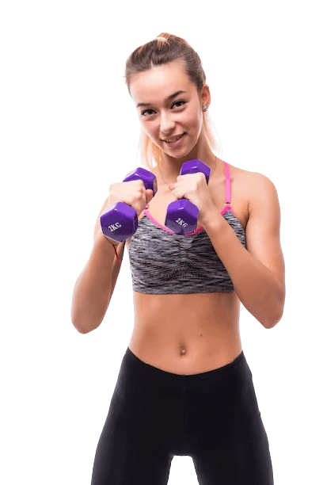

Transforme Seus Treinos com a Creatina Probiotica!
- Aumento da Força e Potência Muscular: A creatina ajuda a aumentar a produção de ATP (adenosina trifosfato), que é a principal fonte de energia para atividades de alta intensidade e curta duração. Isso pode melhorar seu desempenho em exercícios como levantamento de peso, sprints e atividades que exigem explosão muscular.
- Melhoria na Recuperação: A suplementação de creatina pode ajudar na recuperação muscular, reduzindo o tempo necessário para se recuperar entre as sessões de treino e diminuindo a dor muscular pós-treino.
- Aumento da Massa Muscular: A creatina pode promover o aumento da massa muscular ao aumentar a retenção de água dentro das células musculares e ao melhorar a síntese de proteínas. Esse efeito pode contribuir para ganhos de massa muscular ao longo do tempo.
- Melhora na Função Cognitiva: Alguns estudos sugerem que a creatina pode ter efeitos benéficos na função cognitiva, incluindo memória e atenção. Esse benefício é atribuído ao papel da creatina na produção de energia para o cérebro.
- Possível Benefício para a Saúde Óssea: Há pesquisas iniciais que indicam que a creatina pode ter um efeito positivo na saúde óssea, possivelmente ajudando a aumentar a densidade óssea e a reduzir o risco de fraturas, embora mais estudos sejam necessários para confirmar esses efeitos.
Veja os benefícios da Creatina para sua mente e seu corpo
Clientes satisfeitos
- "Nunca me senti tão energizada e focada durante os treinos! A creatina probiótica fez uma diferença incrível na minha resistência e recuperação. Além disso, percebi uma melhora no meu sistema digestivo, o que é um bônus inesperado. Recomendo a todos!"
- "Estava cético no início, mas a creatina probiótica superou todas as minhas expectativas. Meus músculos estão mais definidos e tenho muito mais disposição para enfrentar os treinos pesados. E o melhor de tudo, sem nenhum desconforto gástrico!"
- "A creatina probiótica revolucionou minha rotina de treinos. Antes, eu sempre ficava exausta após os exercícios, mas agora me sinto pronta para mais. Além disso, notei que meu corpo está mais forte e resistente. Definitivamente vou continuar usando!"
- "Depois de começar a usar a creatina probiótica, meus ganhos na academia foram para outro nível. Sinto que meu corpo responde muito melhor aos exercícios, e minha recuperação é mais rápida. E o fato de ser uma creatina que também cuida da saúde intestinal é simplesmente fantástico."
- "Adoro a creatina probiótica! Desde que comecei a tomar, minha performance nos treinos melhorou muito. Também percebi que minha digestão ficou mais leve e estou com muito mais energia no dia a dia. É o suplemento perfeito para quem quer resultados reais sem comprometer a saúde!"
- "Minha creatina preferida. Desde que comecei a tomar melhorei minha performance nos treinos . Muito importante para o meu dia a dia. É perfeita para quem quer resultados reais!"
-
Ana S.:
-
Carlos M.:
-
Juliana F.:
-
Ricardo L.:
-

-
Marina R.:

-
Alan Siqueira
Características importantes
- Melhora na Absorção: A creatina probiótica é formulada para melhorar a absorção do suplemento pelo corpo. A presença de probióticos ajuda a otimizar a digestão e a assimilação da creatina, garantindo que uma quantidade maior do suplemento seja efetivamente utilizada pelos músculos.
- Saúde Digestiva: Além dos benefícios para o desempenho físico, a creatina probiótica também promove a saúde intestinal. Os probióticos presentes ajudam a equilibrar a flora intestinal, o que pode resultar em uma digestão mais saudável e em uma melhor absorção de nutrientes.
- Aumento da Performance Física: Como a creatina regular, a creatina probiótica ajuda a aumentar a força, a resistência e o ganho de massa muscular. Com a absorção aprimorada, esses efeitos podem ser potencializados, proporcionando resultados mais rápidos e eficazes.
- Recuperação Acelerada: A creatina probiótica pode contribuir para uma recuperação muscular mais rápida após exercícios intensos. Isso permite que os atletas treinem com mais frequência e intensidade, sem comprometer a recuperação dos músculos.
- Redução de Efeitos Colaterais: Graças à adição de probióticos, a creatina probiótica tende a causar menos desconforto gastrointestinal, como inchaço ou gases, que podem ocorrer com o uso de creatina tradicional. Isso a torna uma opção mais confortável para quem tem sensibilidade digestiva.
Garantia de Qualidade
- Qualidade Certificada: A creatina probiótica é fabricada seguindo os mais altos padrões de qualidade, com certificações que comprovam a pureza e a eficácia do produto.
- Ingredientes Naturais: O vendedor garante que a creatina probiótica é feita apenas com ingredientes naturais, sem adição de substâncias artificiais ou químicas prejudiciais.

- Resultados Visíveis: O vendedor assegura que, com o uso regular do produto, os clientes notarão melhorias significativas no desempenho físico e na recuperação muscular dentro de um período específico.
- Entrega Rápida e Segura: Garantia de que o produto será entregue dentro do prazo estipulado, em embalagem segura e discreta, com possibilidade de rastreamento.

Inscreva-se para Ofertas Exclusivas!
Perguntas frequentes
- Como posso rastrear o meu pedido?
- Após a confirmação do pedido, você receberá um e-mail com um código de rastreamento. Basta acessar o link fornecido no e-mail e inserir o código para acompanhar a entrega em tempo real.
- Qual é a política de devolução?
- Se você não estiver satisfeito com o produto, oferecemos uma política de devolução de 30 dias. Você pode solicitar um reembolso completo ou troca, desde que o produto esteja em sua embalagem original e sem uso.
- Qual é o prazo de entrega?
- O prazo de entrega varia de acordo com a sua localização, mas normalmente os pedidos são entregues em 5 a 7 dias úteis. Também oferecemos opções de entrega expressa para quem deseja receber o produto mais rapidamente.
- O produto tem garantia?
- Sim, oferecemos uma garantia de satisfação de 100%. Se você não perceber melhorias dentro de 30 dias de uso, devolvemos seu dinheiro, sem complicações.

- Como posso entrar em contato com o suporte ao cliente?
- Você pode entrar em contato com nosso suporte ao cliente através do telefone, e-mail ou chat ao vivo disponível em nosso site. Estamos aqui para ajudar durante o horário comercial.
- Existe algum desconto para compras em quantidade?
- Sim, oferecemos descontos progressivos para compras em maior quantidade. Entre em contato com nosso atendimento para saber mais sobre as condições e garantir o melhor preço.
- Os ingredientes do produto são seguros?
- Sim, nossa creatina probiótica é formulada com ingredientes de alta qualidade, seguros e naturais. Todos os ingredientes são testados rigorosamente para garantir a pureza e a segurança do produto.
- Posso alterar ou cancelar meu pedido após a confirmação?
- Sim, você pode alterar ou cancelar seu pedido dentro de 24 horas após a confirmação, sem nenhum custo adicional. Basta entrar em contato com nosso suporte para realizar a modificação.

- O produto é adequado para todos os tipos de dietas?
- Sim, nossa creatina probiótica é adequada para veganos e vegetarianos, e não contém ingredientes de origem animal. Também é livre de glúten e lactose, sendo adequada para pessoas com restrições alimentares.
- Vocês oferecem suporte pós-compra?
- Sim, oferecemos suporte pós-compra para todas as suas dúvidas sobre o uso do produto. Nosso time de especialistas está disponível para ajudar você a tirar o máximo proveito da creatina probiótica.